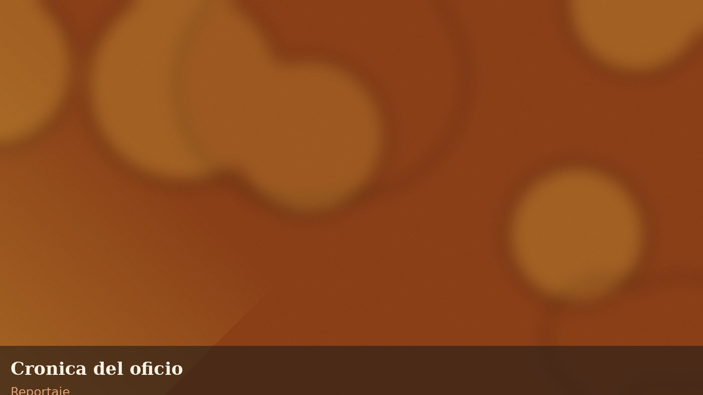
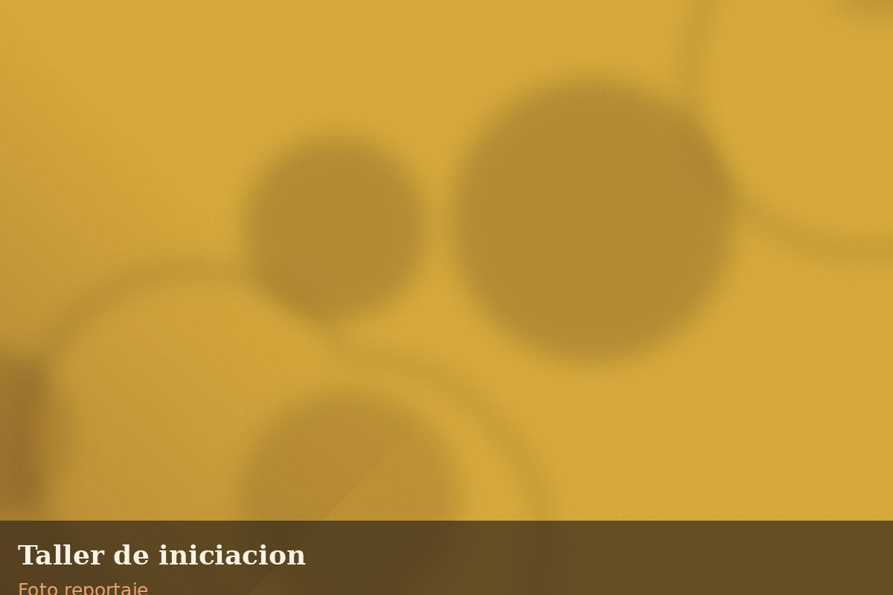
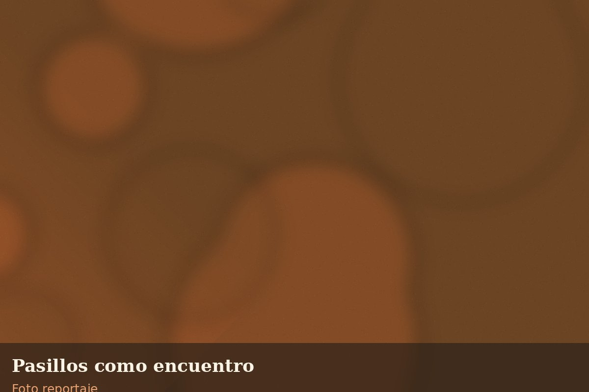

En la Casa de Cultura, una tarde cualquiera, suena un torno. La pieza gira despacio y la mano la guia con paciencia. Esa escena, repetida durante decadas, es la que las jornadas quieren rescatar y compartir con quien quiera mirar de cerca.
Un saber que se transmite con las manos
La artesania local lleva mucho tiempo enfrentandose al mismo dilema: como sobrevivir cuando el ritmo industrial impone otros tiempos. Y sin embargo, taller a taller, la respuesta es la misma. Se sobrevive ensenando. Se sobrevive abriendo la puerta. Se sobrevive contando.
Las jornadas nacieron, precisamente, para abrir esa puerta. No son una feria al uso ni un mercado mas. Son tres dias en los que los talleres salen a la calle y las salas de la Casa de Cultura se llenan de virutas, hilos y arcilla.
El oficio no se aprende en un dia, pero hay un dia en el que se decide aprenderlo. Las jornadas existen para crear ese dia. Margarita Olivares, ceramista
Una nueva generacion mira atras
Lo curioso es que el interes esta volviendo, y lo hace con caras jovenes. Cada vez son mas las personas menores de treinta años que piden plaza en los talleres de iniciacion. Quieren tocar, quieren equivocarse, quieren saber por que una pieza al horno se rompe. Y lo quieren saber sin pantallas de por medio.

Los talleres locales han sabido leer ese cambio. Algunos, como el de Pere Montserrat, dedican parte de su tiempo a la formacion. Otros, como el de Lucia Hernandez, abren su casa una vez al mes para enseñar el bolillo a quien quiera acercarse.
Lo que se podra ver en estos tres dias
El programa se ha pensado para que cualquiera, con o sin experiencia, pueda participar:
- Demostraciones en directo de torno, vidrio y forja.
- Talleres de iniciacion al encaje, la cesteria y el grabado.
- Charlas breves sobre el futuro del oficio y la formacion.
- Mercado artesano en la plaza Mayor con cuarenta puestos.
- Espacio infantil con actividad permanente.
Como participar
La inscripcion es gratuita pero las plazas son limitadas. El procedimiento es sencillo:
- Elige uno o varios talleres del programa.
- Reserva tu plaza desde la pagina de inscripcion.
- Recoge tu acreditacion el mismo dia, en la entrada de la Casa de Cultura.
- Llega quince minutos antes para no perder la primera explicacion.
Una conversacion con el barrio
Pero quizas lo mas importante no este en el programa oficial. La conversacion ocurre en los pasillos, en la cola de la cafeteria, en el corro que se forma alrededor de cualquier mesa de trabajo. Por eso las jornadas se han disenado con espacios abiertos, sin sillas alineadas, para que la gente se mezcle.

El ayuntamiento ha querido implicar tambien a los comercios cercanos. Las cafeterias y restaurantes del entorno tendran un menu especial durante esos tres dias, con descuentos para quien lleve la acreditacion de las jornadas.
Mas que un evento
Si todo va bien, las jornadas se repetiran cada ano. Y si el ritmo del taller se mantiene, quizas algunas de las personas que pasen estos dias por la sala B vuelvan, dentro de unos meses, a inscribirse en una formacion mas larga. Esa es la verdadera medida del exito: no la afluencia, sino la continuidad.
El oficio se pasa con calma. No hay otra manera. Pero pasa, si encuentra quien lo recoja.